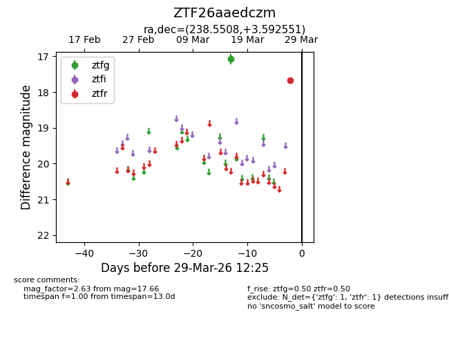
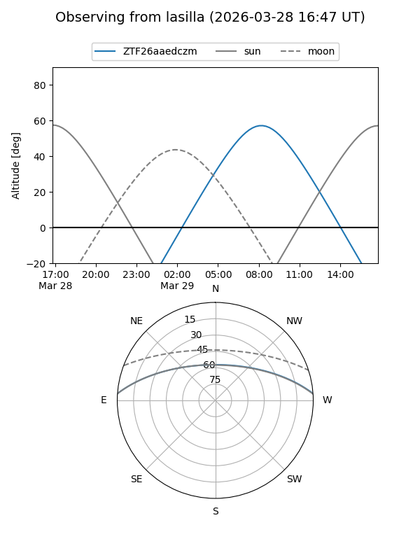
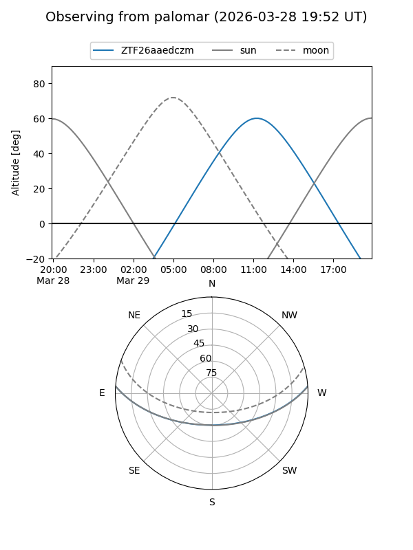

ZTF26aaedczm
Target ZTF26aaedczm at 2026-03-29 12:28
Aliases and brokers:
FINK: link
Lasair: link
ALeRCE: link
alt names
ZTF26aaedczm (ztf,fink_ztf)
Coordinates:
equatorial (ra, dec) = 238.5508,+3.59255
equatorial (HMS+DMS) = 15:54:12.19,+03:35:33.18
galactic (l, b) = (12.7775,+40.46838)
Flags:
Photometry:
last ztfg=17.07, ztfr=17.66
1 ztfg, 1 ztfr detections
Lightcurve

Visibility


Additional plots